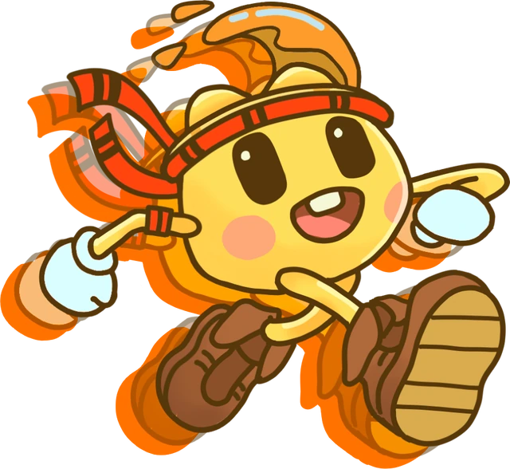
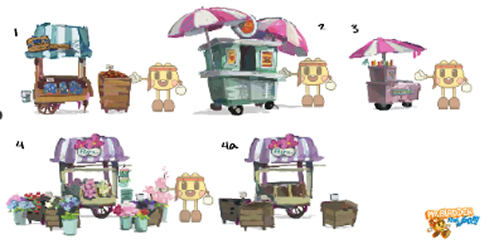
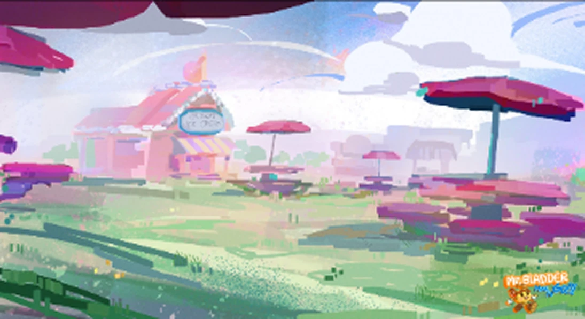
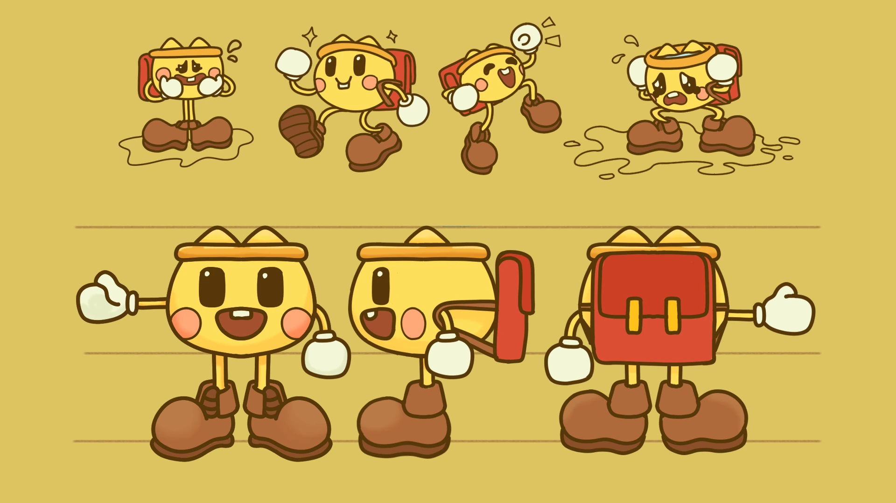
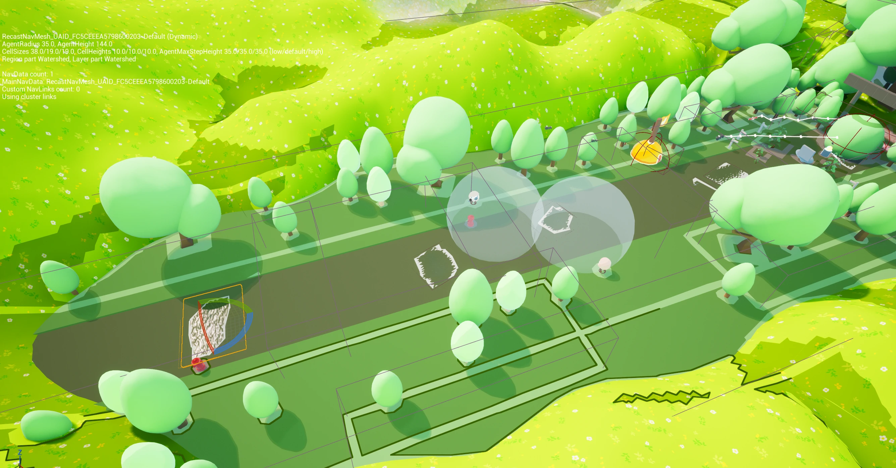
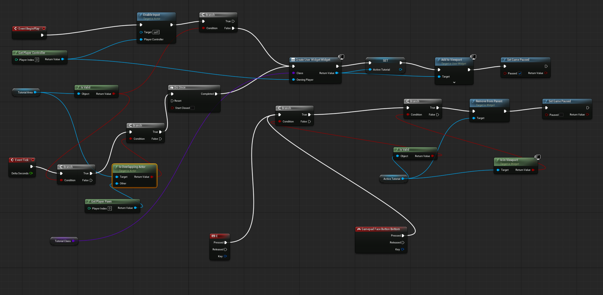
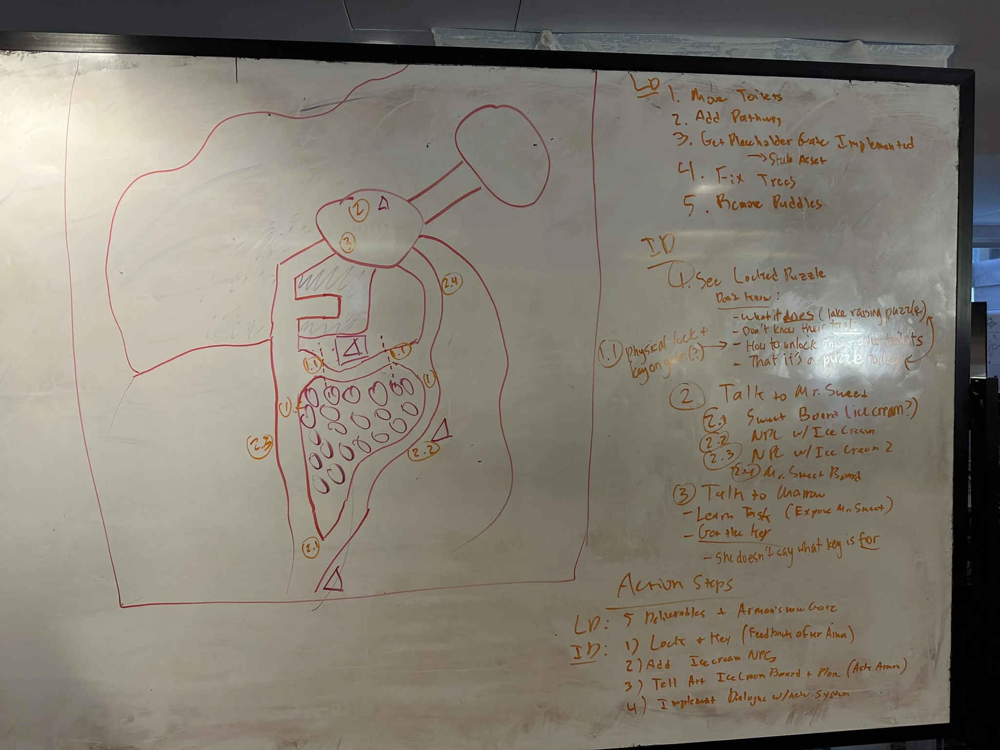
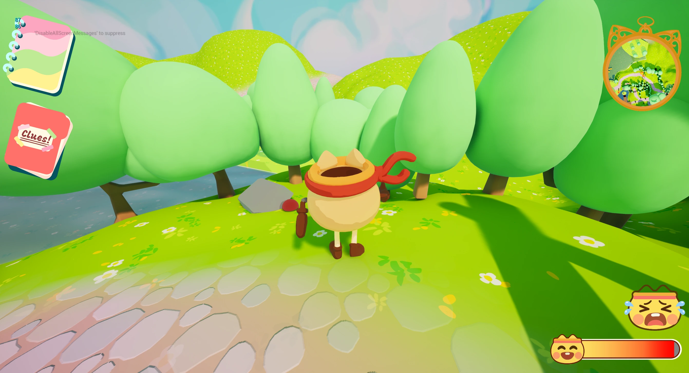
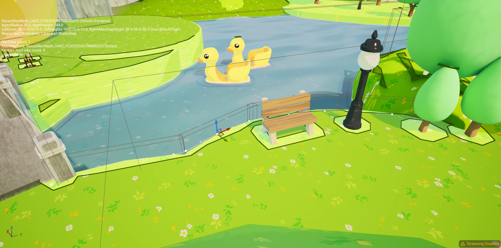

A whimsical balancing game where you play as Mr Bladder, a container shaped guy in an organ themed world, who is trying hard not to spill his pee in public.

Concept Art
Concept art by the project’s artists.




My Role - Level Designer
- Designed the tutorial level and implemented it in Unreal Engine using Blueprints.
- Created spline-based blocking volumes for the first park level.
- Created and sculpted terrain for the park level in Unreal Engine.
- Designed the park’s terrain layout.
- Documented design feedback and created a level design format guide.
Design Documents







Challenges
Getting back up to speed with Unreal Engine and Perforce on a team of more than 50 people was difficult at first. I hadn’t used Blueprints in a long time, so I had to relearn the workflow. Once I was comfortable in the engine, the work itself was manageable. Working in a shared project was trickier. Miscommunication could lead to someone working in the wrong scene, and it was easy to forget to sync or save changes before submitting them in Perforce. The hardest part for us was keeping the art and design teams aligned. We changed the design frequently, which meant artists often had to make additional assets. Some of that work went unused when we cut features.
In Development...